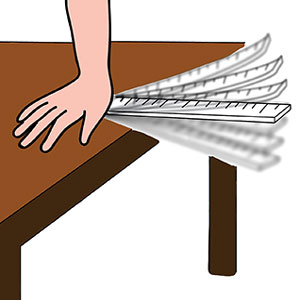
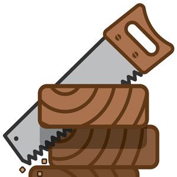

الحرف لغةً: الطرف، واصطلاحًا: صوت يعتمد على مخرج محقق أو مقدّر.
الحروف الأبجدية هي الحروف المكتوبة وعددها ثمانية وعشرون (28) حرفًا وهي: ألف (أ)، باء (ب)، تاء (ت)، ثاء (ث)، جيم (ج)، حاء (ح)، خاء (خ)، دال (د)، ذال (ذ)، راء (ر)، زاي (ز)، سين (س)، شين (ش)، صاد (ص)، ضاد (ض)، طاء (ط)، ظاء (ظ)، عين (ع)، غين (غ)، فاء (ف)، قاف (ق)، كاف (ك)، لام (ل)، ميم (م)، نون (ن)، هاء (هـ)، واو (و)، ياء (ي).
ترتيبها عند المشارقة: أبجد هوز حطي كلمن سعفص قرشت ثخذ ضظغ.
ترتيبها عند المغاربة: أبجد هوز حطي كلمن صعفض قرست ثخذ ظغش.
الحروف الهجائية هي الحروف المنطوقة وتنقسم إلى قسمين:
وعددها تسعة وعشرون (29) حرفًا، ولقد رتبها الإمام نصر بن عاصم الليثي بحسب تشابهها في الخط بعد أن نقطها ليفرق بين المتماثلات على النحو التالي: أ ب ت ث ج ح خ د ذ ر ز س ش ص ض ط ظ ع غ ف ق ك ل م ن هـ و لا ي.
فائدة: الألـف التي في أول الحـروف الأبجديـة (أ) هي حرفان في الحروف الهجائية وهما:
تنبيه: تُقرأ الحروف الهجائية بألفاظها لا أسمائها فحرف الباء على سبيل المثال يلفظ بَ بُ بِ إبْ وليس (باء) وكذا باقي الحروف.
قال الطيبي في المفيد في التجويد:
وَعِـدَّةُ الْحُروفِ لِلْهِجَاءِ
تِسْعٌ وَعِشْرُونَ بِلَا امْتِرَاءِ
أَوَّلهُاَ الهْمَزَةُ، لَكِنْ سُمِّيَتْ:
بِألفِ مَجَاًزا؛ اذْ قَدْ صُوِّرَتْ
بِهَا فِي الِاْبتـدِاءِ حَتْمًا، وَهْيَ فِي
سِـوَاهُ بِالْوَاوِ وَيَـا وَأَلِفِ
وَدُونَ صُـورَةٍ، فَمَا لِلْهَمْـزَةِ
مُمَيِّزٌ يخَصُّهاَ مِـنْ صُورَةِ
بَلْ يَسْتَعِيرُونَ لهَا صُورَةَ مَا
مَّـر لتِخِفيٍـف إلِيْـهِ عُلِمَا
وَالْأَلِفُ: الْمَدُّ الَّذِي يَنْشَأُ مِـنْ
إشِبَاعِ فَتْحَةٍ كَ مَنْ: صَافَى أَمِنْ
فَلَفْظُهَا مُفَردَةً مُمْتَنِعُ
وَلمَ تَكُنْ فِي الِاْبتِدَاءِ تَقعُ
إذِ تَلْزَمُ السُّكُـونَ، وَالْفَتْحُ لِمَا
تَلِيهِ، فَاْحَتاَجتْ لِحْـرٍف قُدِّمَا
فَاخْتِيـرَتِ اللَّامُ وَقَالُـوا: لَامَ الفِ
أَيْ لَفْظُهَا بِهَذِهِ اللَّامِ عُـرِفْ
إذِ قَدْ تَوصَّلُـوا لِلَامٍ سَكَنَـتْ
أَيْ لَامِ "اَلْ" بِألـفِ تحَـرَّكَتْ
أَيْ: هَمْـزَةٍ، فَعَكَسُوا ذَا فِي الْألَفْ
مَعْ أَنَّ" لا" حَـرْفٌ لَهُ مَعْنىً أُلِفْ
فَمَنْ يَكُن عَنْ ألـفِ قَدْ سُئِلَا
بِأَنْ يُبِيـنَ لَفْظَهَا؟ يَقُولُ: لَا
هي الحروف التي تخرج بين مخرجين أو تتردد بين حرفين أو صفتين، وهي:
قال الطيبي في المفيد في التجويد:
وَاسْتعْملُوا أَيْضًا حُرُوفًا زَائِـدَهْ
عَلَى الَّتِي تَقَدَّمَـتْ لفِائِدَهْ
كَقَصْـدِ تَخِفيـفٍ، وَقَـدْ تَفَـرَّعَتْ
مِنْ تلِكَ، كَالهْمَزَةِ حِينَ سُهِّلَتْ
وَألِـفٍ كَالْيَـاءِ إذِ تُمَالُ
وَالَّصادِ كَالزَّايِ كَمَا قَد قَاُلوا
والْياءِ كَالْـوَاوِ كَ: قِيـلَ، مِمَّا
كَسْـرَ ابْتدِائِه أَشَمُّوا ضَمَّا
وَالْأَلِفُ الَّتـيِ تَرَاهَا فُخِّمَتْ
وَهَكذَا اللَّامُ إذِا مَا غُّلظَـتْ
وَالنُّـونَ، عَدُّوهَا إذِا لمَ يُظْهِرُوا
قُلْتُ: كَذَاكَ الْمِيمُ فيِمَا يَظْهرُ
وقال عثمان مراد في السلسبيل الشافي:
اعلَمْ بِأَنَّ الحَرْفَ صَوْتٌ اعتَمَدْ
على مَقاطِعَ لها في الفَمِّ حَدْ
والمخَـرجُ اعلَمْ أنَّهُ في العُـرْفِ
معناهُ مَوضِعُ خـرُوجِ الحَرْفِ
ثُمَّ الحُـرُوفُ عِنْدَهُمْ قِسْمَـانِ
أَصْلِيَّـةٌ فَرْعيَّةٌ فالثانـي
خَمسـةُ أَحرُفٍ بلا مِحالـةْ
هَمـزٌ مُسهَّلٌ أَلِفْ مُمَالَةْ
والصـادُ والياءُ المُشَمَّتَانِ
وأَلِفُ التَّفخيـمِ سَلْ بَياني
الحرف إما أن يكون مخففاً وإما أن يكون مشدداً.
للحرف المخفف الأربع حالات التالية:
تنبيه: يستثنى من هذا حرف الألف فهو لا يأتي إلا ساكناً.
قال الطيبي في المفيد في التجويد:
وَكُلُّ حَرْفٍ وَاحِدٍ إِلَّا الْألَفْ
َحْوَاُلـهُ أَرْبَعَةٌ بهِا وُصِفْ:
سَاكـنِ، اوْ مُحَرَّكٌ بفِتْحَـةِ
أَوْ كَسْرَةٍ تَكُونُ، أَوْ بِضَمَّةِ
مِثاُلـهُ: بَ، بِ، بُ، إِبْ، لِلْبَاءِ
وَقِـس عَلَى ذَا سَائـرِ الهِجَاءِ
وَسَاغَ الِاْبتِـدَا بهَا، وَجَازَ أَنْ
تَتْبَع مَا حُـرِّكَ وَالَّذِي سَكَنْ
هو عبارة عن حرفين: الأول ساكن والثاني متحرك؛ أُدخل الحرف الأول في الحرف الثاني فأصبحا حرفاً واحداً من جنس الثاني، وأصبح الحرف الثاني مشدداً وله صوتان. مثال ذلك: ﴿قَدَّمَ﴾ [ص: 61] فالدال المشددة (دَّ) هي عبارة عن دال ساكنة (دْ) ودال متحركة (دَ) أدخل الساكن بالمتحرك فأصبحا حرفاً واحداً مشدداً (دَّ) له صوتان (قدْ) (دَم) كما يتبين بالتحليل الصوتي.
قد يشدد حرف بسبب علاقته بحرف سبقه كما سيتم شرحه في علاقة الحروف نحو الذال في: ﴿إِذ ذَّهَبَ﴾ [الأنبياء: 87] والدال في: ﴿أَثۡقَلَت دَّعَوَا﴾ [الأعراف: 189] والراء في: ﴿وَقُل رَّبِّ﴾ [الإسراء: 24] والواو في: ﴿مِن وَاقٖ﴾ [غافر: 21] والنون في النون في: {تَأۡمَ۬نَّا} [يوسف: 11] لمن يعمل بالأصل حيث أن أصل الكلمة (تأمنُنَا).
تنبيه: لا تبدأ الكلمة بحرف ساكن ولا بحرف مشدد.
قال الطيبي في المفيد في التجويد:
والْبدْءُ باِلَّتشْديِد غَيْـرُ مُمْكِنِ
وَلَا بمِا خُفِّفَ مِـنْ مَسكَّنِ
وَكُلُّ مَا شُدِّدَ فِي وِزَانِ
حَرَفْينِ: سَاكنِ بِضِمْنِ ثَانِ
مَثاُل هَمْزٍ شَدَّدُوا: سُؤَّالُ
وَليْسَ فِي الذِّكْرِ لَهُ مِثَالُ
ويصاحب الحرف المشدد غنة إذا كان الحرف المشدد نون نحو: ﴿ٱلۡجَنَّةُ﴾ [التكوير: 13] أو ميم نحو: ﴿غَمٍّ﴾ [الحج: 22] سواءً كان ذلك وصلاً أو وقفاً، ولا يصاحبه غنة في باقي الأحرف نحو: ﴿ٱلۡحَجَّ﴾ [البقرة: 196].
قال الطيبي في المفيد في التجويد:
وَأظْهِـر الْغُنَّةَ باِلتَّبْيِيـنِ
مِنْ كُلِّ مِيمٍ شُدِّدَتْ أَوْ نُـونِ
كَقَوْلهِمْ: هَمٌّ، وَغَمٌّ، ثُمَّ، ثَمّ
لكَن، إنِهَّـنَّ، عَنهُـنَّ، فتَمّ
وقال عثمان مراد في السلسبيل الشافي:
إِنْ شُدِّدَتْ نُونٌ ومِيمٌ غُنَّا
وَصْلاً ووقْفاً كَأَتَمَّهُنَّـا
وَسَمِّ حَـرْفَ غُنَّـةٍ مُشَدَّدا
واحـذَرْ لِما قَبْلَهُما أَنْ تَمْدُدَا
تنبيه: بالرغم من أن الواو في: ﴿مِن وَاقٖ﴾ [الرعد: 24] هي مشددة إلا أنها ضبطت في المصف بدون شدة وذلك إشارة إلى أن الإدغام ناقص.
حروف المد هي الحروف الساكنة التي سبقها حرف متحرك بحركة مجانسة لها:
فائدة: تسمى حروف المد:
حرفا اللين هما:
قال الطيبي في المفيد في التجويد:
وَالْـوَاُو والْيـاءُ إذِا مَـا سَكَنَا
مِنْ بَعْدِ فَتْحَةٍ كَ: قَوْلِ غَيْرِنَا
فائدة:
الحركة هي جزء من البناء اللفظي للكلمة وتنقسم الحركات إلى: حركات أصلية وحركات فرعية.
وهي الفتحة والضمة والكسرة ولقد اختلف النحويين فيما إذا كانت الحركات مأخوذة من حروف المد الثلاث (أي أن الفتحة من الألف والضمة من الواو المدية والكسرة من الياء المدية)، أم أن حروف المد مأخوذة من الحركات، وانقسموا إلى عدة أقوال.
تنبيه: تعد الفتحة نصف الألف، والضمة نصف الواو المدية، والكسرة نصف الياء المدية وذلك بدليل أن إشباع أي من الحركات الثلاثة يتولد عنه حرف مد مجانس للحركة، ويعزز ذلك أن حروف المد تقاس بوحدة تسمى حركة وأن مقدار المد الطبيعي هو حركتين.
قال الطيبي في المفيد في التجويد:
وَحَيْثُ أَشْبَعْـتَ فَقَدْ وَلَّـدْتَ مَدْ
وَلمَ يَجزْ إلِّا بحِـرْفٍ انْفَرَدْ
الحركات الفرعية تنحصر في نوعين:
قال الطيبي في المفيد في التجويد:
وَالحَرَكَاتُ وَرَدتْ أَصْلَّيـهْ
وَهْـيَ الثَّلَاثُ، وَأَتَتْ فَرْعِيَّـهْ
وَهْيَ الَّتيِ قْبَـل الَّذِي أُمِيلَا
وَكَسْـرَةٌ كَضَمَّـةٍ كَ :قِيلَ
الحرف المتحرك هو الحرف الذي تتحرك الشفتان عند النطق به، وذلك لأن صوت الحركات مطابق لصوت أصولها من حروف المد إلا أنها أقصر زمناً؛ فعند نطق حرف متحرك نقوم بعملين:
ولتحقيق حركة الحرف على الوجه الصحيح يتوجب:
قال أحمد الطيبي في منظومته المفيد في التجويد:
وَكُلُّ مَضْمُومٍ فَلَـنْ يَتِـمَّا
إِلَّا بِـضَـمِّ الشَّفَتَـيْنِ ضَـمَّـا
وَذُو انْخِفَـاضٍ بِانْخِفـاضٍ لِلْفَـمِ
يَتِمُّ وَالْمَفْتُوحُ بِالْفَتْـحِ افْهَمِ
إِذِ الْحُـرُوفُ إِنْ تَكُنْ مُحَرَّكَهْ
يَشْرَكُهَا مَخْرَجُ أَصْلِ الْحَـرَكَـهْ
أَيْ مَخْـرَجُ الْوَاوِ وَمَخْرَجُ الْأَلِفْ
وَالْيَاءُ فِـي مَخْرَجِهَا الَّذِي عُـرِفْ
فَـإِنْ تَـرَ الْقَارِئَ لَنْ تَنْطَبِقَـا
شِفَاهُـهُ بِالضَّمِّ كُـنْ مُحَقِّـقَا
بِأَنَّـهُ مُنْتَـقِـصٌ مَـا ضَمَّ
وَالْـوَاجِبُ النُّـطْـقُ بِهِ مُتَمَّـا
كَذَاكَ ذُو فَتْـحٍ وَذُو كَسْرٍ يَجِبْ
إِتْـمَـامُ كُلٍّ مِنْهُمَا افْهَمْـهُ تُصِبْ
فَالنَّقْصُ فِي هَذَا لَـدَى التَّأَمُّلِ
أَقْبَحُ فِي الْمَعْنَى مِنَ اللَّحْنِ الْجَلِي
إِذْ هُوَ تَغْيِيـرٌ لِـذَاتِ الْحَرْفِ
وَاللَّحْـنُ تَغْيِيـرٌ لَهُ بِالْـوَصْـفِ
قال أحمد الطيبي في منظومته المفيد في التجويد:
وَعِندْ نُطْـقِ الحَرَكَاتِ فَاحْـذَرَا
نَقْصًـا أَوِ اشْبَاعًـا أَوَ انْ تُغَيِّرَا
بمِزْجِ بَعْضِها بِصَوتِ بَعْـضِ
أَوْ بِسُكُـونٍ فْهَـو غَيرْ مَرْضِي
فَمَـزْجُ بَعْضِها بِبَعْضٍ إنِّمَا
يَجـوزُ فِي الْفَرْعِـي الَّذِي تَقَّدمَا
وَحَيْثُ أَشْبَعْـتَ فَقَدْ وَلَّـدْتَ مَدْ
وَلمَ يَجزْ إلِّا بحِـرْفٍ انْفَرَدْ
تنبيهات:
تتساوى المدة الزمنية المستغرقة لنطق جميع الحروف المتحركة أثناء الأداء العملي سواءً أكانت الحركة فتحة أو ضمة أو كسرة، ومقدارها حركة واحدة ضمن المرتبة الواحدة من مراتب التلاوة تحقيقًا وتدويرًا وحدرًا.
مثال:
قال السخاوي في نونيته:
لِلْحَرْفِ مِيـزَانٌ؛ فَلَا تَكُ طَاغِيًا
فِيهِ، وَلَا تَكُ مُخْسِـرَ الْمِيزَانِ
تنبيه: إشباع الحركة (زيادة زمنها) يتولد عنه حرف مد مجانس له ولهذا استخدمت الحركة كمقياس لأزمنة المدود.
قال الطيبي في المفيد في التجويد:
وَحَيْثُ أَشْبَعْـتَ فَقَدْ وَلَّـدْتَ مَدْ
وَلمَ يَجزْ إلِّا بحِـرْفٍ انْفَرَدْ
الصوت هو الأثر الذي تدركه الأذن البشرية الناتج عن تموُّج طبقات الهواء تموُّجًا من 16 إلى 20,000 ذبذبة في الثانية، حيث أن الأذن البشرية لا تدرك التموجات خارج هذا النطاق.
تحدث الأصوات بالطبيعة بإحدى الطرق التالية:


الصوت الإنساني هو الهواء الخارج من الرئتين المتموج بسبب تصادم أو تباعد أو اهتزاز طرفين من أعضاء النطق.
النبر لغةً: الهمز وشدة الصياح، واصطلاحًا: الضغط على مقطع أوحرف معين بحيث يكون صوته أعلى بقليل مما يجاوره.
تقوم العرب بالنبر في الحالات التالية:
تقوم العرب بالنبر على الواو المشددة نحو: ﴿ٱلۡقُوَّةَ﴾ [البقرة: 165]، والياء المشددة نحو: ﴿إِيَّاكَ﴾ [الفاتحة: 5] وذلك للتفريق بين الحرف المشدد والمخفف.
تقوم العرب بالنبر على الحرف المشدد الموقوف عليه للتفريق بين الحرف المشدد والمخفف نحو: ﴿مُسۡتَقَرّٞ﴾ [البقرة: 36]، أو لتوضيح المعنى المقصود نحو: الوقف على كلمة ﴿عَدْوّ﴾ [البقرة: 36] فالمخففة تفيد معنى الجري والمشددة تفيد معنى العداء.
الاستثناءات: يستثنى من النبر ما يلي:
تقوم العرب بالنبر على الحرف المشدد الذي يأتي بعد حرف مد نحو: ﴿دَآبَّةٖ﴾ [البقرة: 164]، ولا يكـون ذلك إلا في المد اللازم الكلمي المثقل، وذلك للتفريق بين الحرف المخفف والمشدد، ويستثنى من ذلك النون والميم ففيهما غنة.
تقوم العرب بالنبر على الهمزة الساكنة أينما وردت نحو: ﴿يُؤۡمِنُونَ﴾ [البقرة: 3] والهمزة التي تسكن للوقف نحو: ﴿ٱلسَّمَآءِ﴾ [البقرة: 19]، وذلك لكيلا تسقط الهمزة على سبيل الخطأ.
تقوم العرب بالنبر على الحرف الذي يسبق ألف التثنية التي تسقط لالتقاء ساكنين نحو: ﴿وَٱسۡتَبَقَا ٱلۡبَابَ﴾ [يوسف: 25]، وذلك للتفريق بين المثنى والمفرد إذا استدعت الحاجة لذلك.